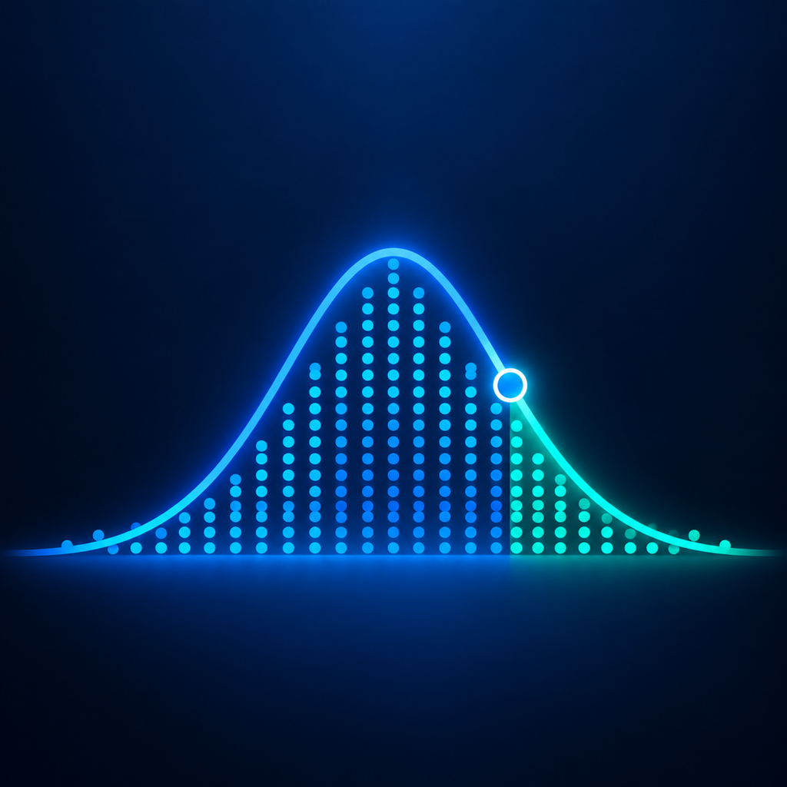
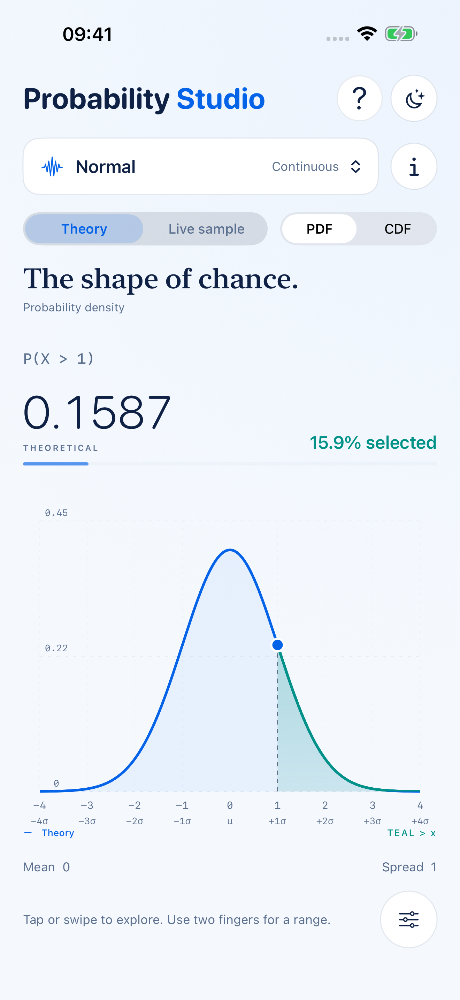

Continuous
Standard Normal
μ = 0, σ = 1
P(X < 1.00)0.8413

Probability, made tangible
Grab a distribution. Point to the answer you want.

Drag to change the light.
See the distribution. Find the probability. Understand both.
Try it here
The same ideas, in miniature. Move the controls to select an area under a standard Normal curve or outcomes from a Binomial distribution.
Continuous
μ = 0, σ = 1
Discrete
n = 20, p = 0.5
Live sample
One observation means very little. Let them arrive, and the theoretical shape gradually emerges from the noise.
Built for exploration
Swipe across a chart to select an area. Use two fingers for an interval, or tap an outcome on a discrete distribution.
Enter precise bounds to find a probability, or enter a probability to find its value.
Create a clean, labelled chart ready to save, copy or send.
Every distribution has plain-language notes, key variables and an example.
The right shape for the question
On first launch, take the five-step interactive tour or explore straight away. Tap ? at the top to revisit the tour at any time.
On iPhone, tap the sliders button. On iPad, open Studio controls from the sidebar button. Number fields and increment controls change the current distribution; Reset restores its defaults.
Tap the probability button, choose the region, then enter the bounds. Calculations retain full internal precision while long values are rounded where space is limited.
Tap the probability result. Enter a percentage or decimal, then choose a lower tail, central interval or upper tail.
Tap Share chart below the chart.
Random samples vary. Small samples can differ noticeably; larger samples usually approximate the theoretical shape more closely.
Discrete outcomes come in steps. The calculator shows the probability actually attained by the selected cutoff or interval.
No account is required, and calculations and sampling run on your device. Read the privacy policy for full details.